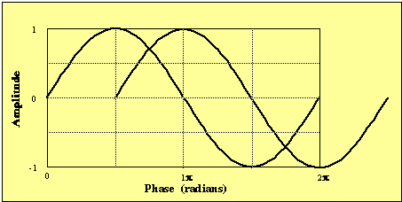
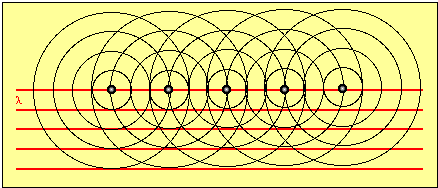
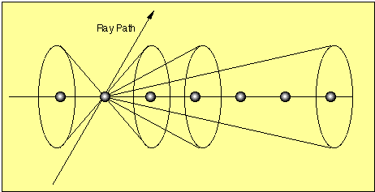
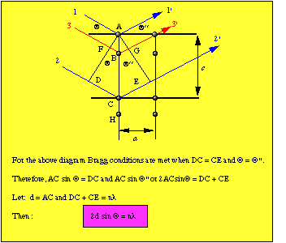

Readings:
X-ray Diffraction Principles
The essential feature for
all diffraction phenomena is that the wavelength of the wave is
about the same as the distance between the scattering points
through which the waves are traveling.
What are typical inter-planar distances in a clay mineral?
Answer: Can range from 0.1 to 50 Å (0.01 to 5 nm)
What is the range of wavelength for X-rays? Answer: Ranges from 0.1 to 100 Å
(0.01 to 10 nm)
So it is a coincidence that we use X-rays for diffraction studies
of crystalline material?
Coherent Scattering
When X-rays encounter electrons they are scattered....
Electromagnetic radiation (EM) has vector properties with a ray path defined as the direction of EM propagation.
As with all electromagnetic radiation there is an electric E component vibrating perpendicular to the ray and a magnetic H vector perpendicular to the electric vector.
The electric component interacts with the electrons of the atoms, vibrating in resonance, essentially absorbing and re-emitting the same frequency radiation in all directions.
The electrons around the nucleus do the scattering, therefore the scattering power of an atom increases with the number of electrons bound to the atom.
The scattering power is not exactly proportional to the number of electrons, because as the number of electrons increase some destructive interference occurs. In other words, electrons are not all in the same place and there is a phase shift.
Interference

A diffracted beam is a beam that results from a great number of
constructively interfered wave fronts. The two waves in the
diagram above have path-length-difference of 1/4 of the
wavelength.
Click here to download a
simple Excel spreadsheet that allows you to add two waves of equal
wavelength together.
What condition allows for numerous wave fronts to come together in a constructive way?
Scattering from a row of atoms.

Regularly spaced scattering centers (i.e., atoms) result in the constructive interference at specific points in space and destructive interference in all other points in space.
Note the points of constructive interference in the above figure
Wave fronts of constructive interference result.
These fronts form cones of constructive interference.

Where cones intersect in 3-dimensions, further constructive interference occurs.
Scattering from a three dimensional crystal structure
Until now we have only considered a single row of atoms. We know that atoms in a crystal lattice are arranged in an orderly three dimension array. For each linear set of scattering atoms (row) there is a set of diffraction cones that emanate from atom centers. The places where the cones coincide (i.e., constructively interfere) occur under unique geometric conditions.
If we consider an incident beam approaching scattering centers at some angle (θ), it can be shown that the only place the scattered beam will be in phase is at the same or "reflected" angle that leaves the scattering points.

Geometrically, the conditions of constructive interference are met only when DC = CE therefore, θ = θ' and AC = DC sinθ.
Under these conditions there is zero path length difference between rays 1 and 2.
Unlike light, which can be reflected at all angles, X-rays are "reflected" only at specific angles.
The wave fronts that pass through a crystal must have path-length-differences exactly 1,2,3...n integers away or they will destructively interfere.
Compare Rays 1 and 3.
Note path length difference into the plane of atoms is the distance FB + BG.
This additional distance must be equal to some integer distance (i.e., FB + BG = nλ), but it does not.
Note that the distance AC is the inter-planar d-spacing.
Under "reflecting" conditions then θ = θ' and sin θ = AC / DC and sin θ' = AE / CE
Let: d = AC and nλ = DC + CE
then: 2AC sin θ = DC + CE or nλ = 2d sinθ